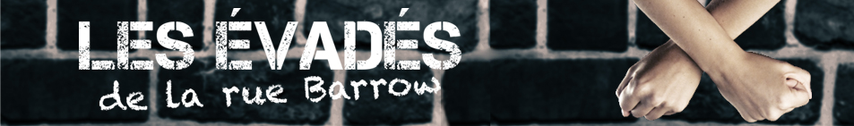
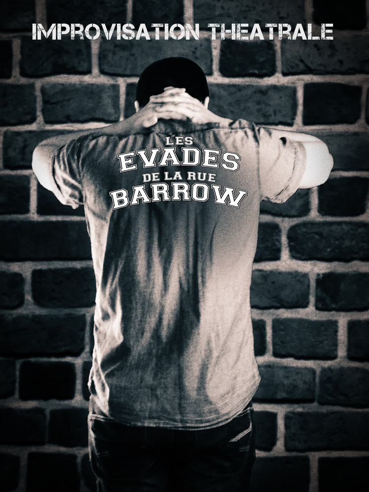
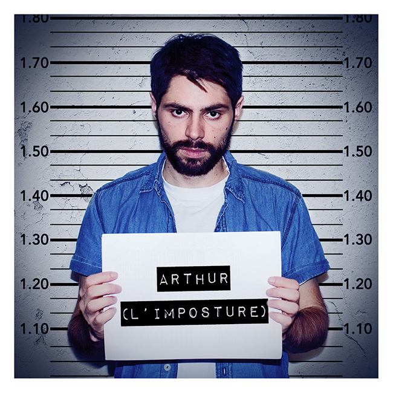
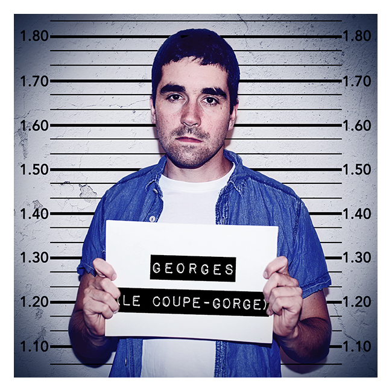
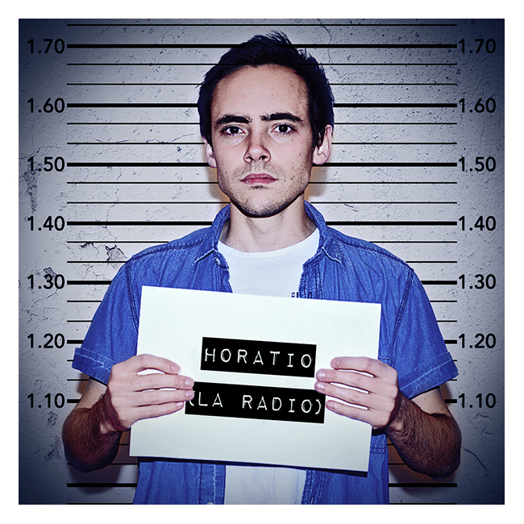
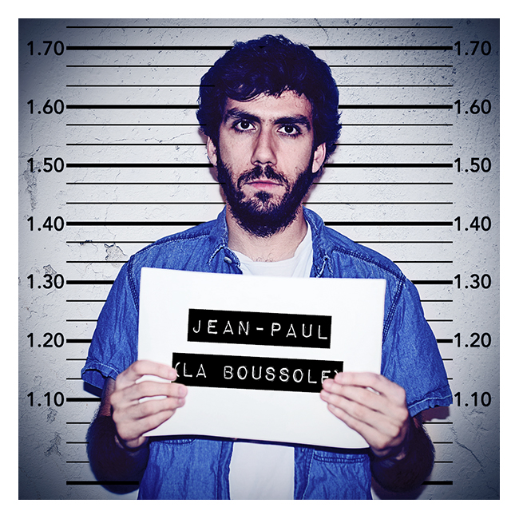
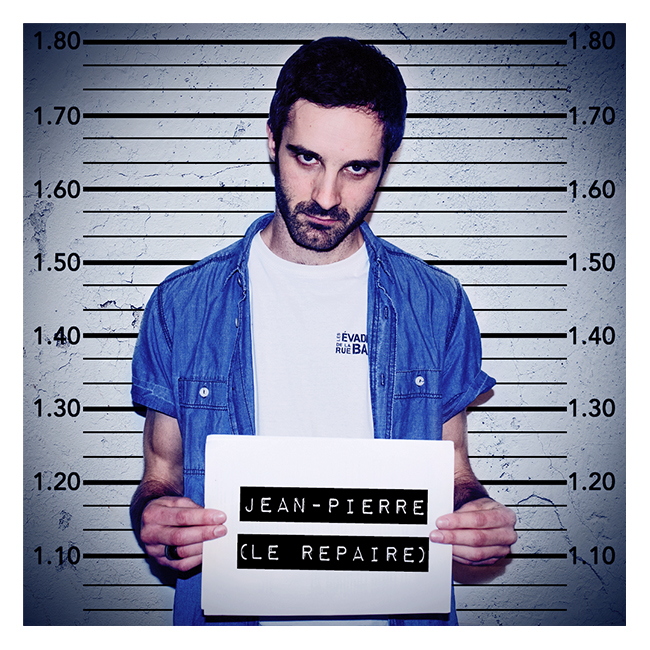
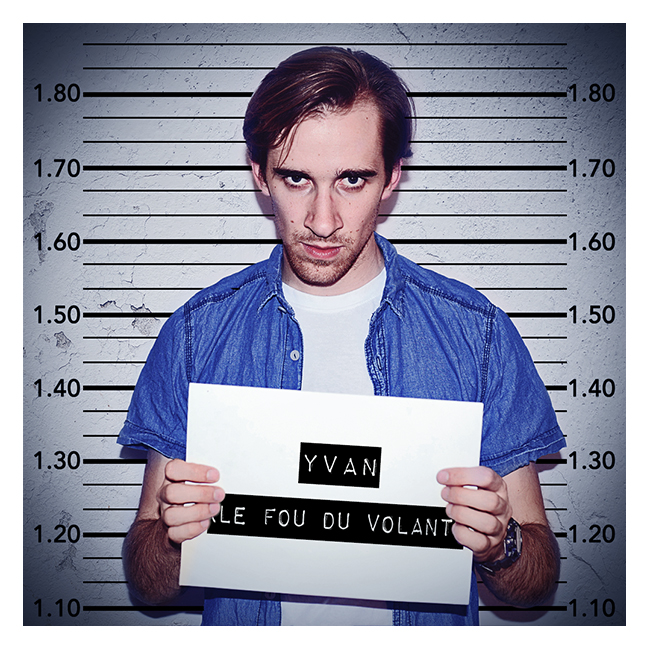
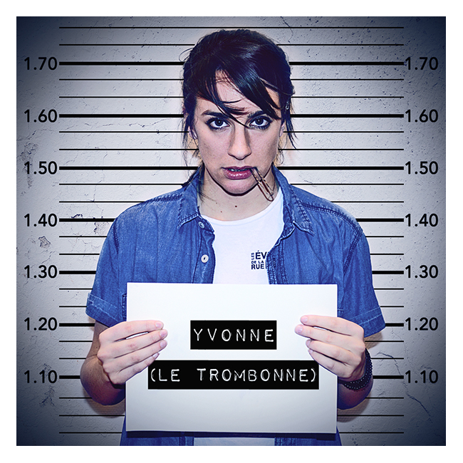

<!DOCTYPE html>
<html>
  <head>
    <meta charset="utf-8" />
    <title>Les Évadés de la rue Barrow</title>
    <link href="http://netdna.bootstrapcdn.com/font-awesome/4.0.3/css/font-awesome.css" rel="stylesheet">
    <link rel="stylesheet" href="static/css/evades.css"  type="text/css"/>
    <meta name="keywords" content="évadés, rue barrow, improvisation, improvisation théatrale, Paris, troupe" />
    <meta name="description" content="Les Évadés de la rue Barrow sont une troupe d'improvisation theatrale parisienne. Nous faisons des spectacles sur Paris et participons des événements dans toute la France." />
  </head>
  <body>
    <script type="text/x-handlebars" data-template-name='application'>
      <div class="container body-evades">
        </img>
        <div class="clearfix"><br /></div>
        <div class="collapse navbar-collapse navbar-inverse">
          <div class="container">
            <ul class="nav navbar-nav">
              {{#link-to 'index' tagName='li'}}<a href="#">Actualités</a>{{/link-to}}
              {{#link-to 'about' tagName='li'}}<a href="#">À propos</a>{{/link-to}}
              {{#link-to 'escapees' tagName='li'}}<a href="#">Spectacles</a>{{/link-to}}
              {{#link-to 'escapees' tagName='li'}}<a href="#">Les Évadés</a>{{/link-to}}
              {{#link-to 'videos' tagName='li'}}<a href="#">Vidéos</a>{{/link-to}}
              {{#link-to 'contact' tagName='li'}}<a href="#">Contact</a>{{/link-to}}
              {{#link-to 'accomplices' tagName='li'}}<a href="#">Nos complices</a>{{/link-to}}
            </ul>
          </div>
        </div>
        <div class="clearfix"><br /></div>

        {{outlet}}

        <hr/>
        <div class="footer">
          <a target="_blank" href="http://twitter.com/EvadesBarrow" class="btn btn-default btn-social-icon btn-twitter">
            <i class="fa fa-twitter"></i>
          </a>
          <a target="_blank" href="http://facebook.com/EvadesBarrow" class="btn btn-default btn-social-icon btn-facebook">
            <i class="fa fa-facebook"></i>
          </a>
          <div class="pull-right"><h4>Oserez-vous devenir leur complice ? &nbsp;&nbsp;&copy; 2016</h4></div>
        </div>
      </div>
    </script>

    <script type="text/x-handlebars" data-template-name='index'>
        <div class="hero-unit hero-unit-evades">
          <div class="spectacle">
            <h3>samedi 26 mars 2016 : L'Évasion</h3>
            <p>Spectacle à 19h au théâtre Pixel</p>
            <address>
              <strong>Théâtre Pixel</strong><br>
              18 rue Championnet<br>
              75018 Paris<br>
            </address>
            <p>Réservez sur <a href="http://www.billetreduc.com/155514/evtbook.htm">Billet Reduc</a> ou au 01 42 54 00 92</p>
            <p>Enfermés dans une prison, des détenus s'évadent dans des mondes imaginaires et complètement improvisés. Venez déposer un objet de votre choix dans la cellule des prisonniers, et participer peut-être à la plus grande des évasions ! Des histoires originales, aussi bien absurdes que touchantes.<br />
<br />
Ce spectacle sera joué par 12 comédiens, regroupant des Évadés et des improvisateurs de tous horizons qui auront passé toute la journée à travailler ensemble sur ce format.<br />
<br />
Mise en scène : Pauline Calmé<br />
          </div>

          <div class="spectacle">
            <h3>mercredi 26 avril 2016 : La Cavale</h3>
            <p>Spectacle à 21h au théâtre du Gouvernail</p>
            <address>
              <strong>Théâtre du Gouvernail.</strong><br>
              5 Passage de Thionville<br>
              75019 Paris<br>
            </address>
            <p>Grâce à vos mots et des diversions de haut vol, Les Évadés tentent d'échapper à la police. Émotion, tension, évasion...</p>
            <p>Oserez-vous être leur complice ?</p>
          </di

          <div class="spectacle">
            <h3>samedi 14 mai 2016 : L'Évasion</h3>
            <p>Spectacle à 19h au théâtre Pixel</p>
            <address>
              <strong>Théâtre Pixel</strong><br>
              18 rue Championnet<br>
              75018 Paris<br>
            </address>
            <p>Réservez sur <a href="http://www.billetreduc.com/155514/evtbook.htm">Billet Reduc</a> ou au 01 42 54 00 92</p>
            <p>Enfermés dans une prison, des détenus s'évadent dans des mondes imaginaires et complètement improvisés. Venez déposer un objet de votre choix dans la cellule des prisonniers, et participer peut-être à la plus grande des évasions ! Des histoires originales, aussi bien absurdes que touchantes.<br />
<br />
Ce spectacle sera joué par 12 comédiens, regroupant des Évadés et des improvisateurs de tous horizons qui auront passé toute la journée à travailler ensemble sur ce format.<br />
<br />
Mise en scène : Pauline Calmé<br />
          </div>
        </div>
    </script>

    <script type="text/x-handlebars" data-template-name='about'>
      <div class="hero-unit hero-unit-evades">
        <h2>Les Évadés de la rue Barrow <small>Troupe d'improvistation théâtrale</small></h2>
        <br />
        <p class="pull-right"><a href="static/pdf/dossier_presse_evades_barrow_2014.pdf">Télécharger notre dossier de presse<span class="glyphicon glyphicon-book"></a></span></p>
        <br />
        <h3>La Troupe</h3>
        <p>« Échappés » d'un cours d'improvisation théâtrale à Télécom Paris, rue Barrault, dix élèves décident en 2010 de fonder leur propre troupe d'improvisation : Les Evadés de la Rue Barrow.</p>  
        S'inspirant du Cercle des Menteurs et des Flibustiers de l'Imaginaire, ils créent un format cabaret, où les comédiens improvisent des extraits d'histoires qu'ils déroulent ensuite à partir de l'extrait choisi par le public. Des contraintes viennent alimenter le jeu, et colorer les différentes improvisations.</p>
        Entre 2010 et 2015, ce format est joué à de nombreuses reprises dans des bars et des festivals, et l'univers bien particulier des Evadés invite les spectateurs à devenir les complices de toutes leurs tentatives d'échapper à la police, et s'évader avec eux.</p> 
        Le renouvellement progressif des membres de la troupe pousse peu à peu celle-ci à repenser la ligne directrice de leurs improvisations, et réfléchir à d'autres champs de création.<br /> 
        En 2015, ils créent un nouveau format, L’Évasion. Ils s'engagent alors dans une exploration de l'instant présent, cherchant l'inspiration dans la réalité des corps et de l'environnement dans lequel ils jouent, et ouvrant une réflexion permanente quant à la place et l'impact du comédien qui se trouve derrière le personnage.<br />
        Des ateliers sont mis en place, comme des lieux de recherche et de rencontre où les membres de la troupe partagent avec d'autres improvisateurs le goût de l'expérimentation, de la poésie et de la scène.</p>
        Actuellement, deux formats sont au travail : L'Evasion et La Cavale.</p>
        <br />
        <h3>Les Spectacles</h3>
        <p>La troupe des Évadés propose 2 spectacles très différents : la Cavale et l'Évasion</p>
        <br />
        <h4>Cavale</h4>
        </img>
        <p>Spectacle entièrement improvisé, où la réalité de l'instant vous emmène dans les contrées enfouies de votre imaginaire.
        Les Évadés sont en cavale.
        Grâce à des diversions de haut vol, ils tentent d'échapper à la police. 
        Des murs, une scène, des corps, des lumières, des mots, des notes de musique… chaque élément de réalité vient ouvrir la porte à un extrait. L'extrait d'une histoire, d'un instant de vie, d'un rêve.
        A vous, alors, de choisir celui que vous souhaitez voir se prolonger...
        Émotion, tension, évasion... Oserez-vous être leur complice ?</p>
        <h4>L'Évasion</h4>
        <p>Enfermés dans une prison, des détenus tentent de s'évader dans des mondes imaginaires et complètement improvisés ! Chaque spectateur peut déposer un objet de son choix dans la cellule des prisonniers et sera le point de départ de plusieurs histoires originales, aussi bien absurdes que touchantes. C'est peut être cela la plus grande des évasions !</p>
        <p>Dans ce spectacle, il n'y a pas de présentateur et les transitions entre les différentes scènes se font progressivement.</p>
      </div>
    </script>

    <script type="text/x-handlebars" data-template-name='escapees'>
      <div class="hero-unit hero-unit-evades">
        <center>
          <div class="fotorama"
               data-loop="true"
               data-autoplay="true">
            
            
            
            
            
            
            
            
          </div>
        </center>
      </div>
    </script>

    <script type="text/x-handlebars" data-template-name='videos'>
      <div class="hero-unit hero-unit-evades">
        <h2>Nos vidéos</h2>
        <div class="spectacle ">
          <iframe width="640" height="360" class="center-block" src="http://www.youtube.com/embed/-cgKuPfvmqE" frameborder="0" allowfullscreen></iframe>
          <p style="text-align: center"><br />Faites tourner l'info : le rap des Évadés</p>
        </div>
        <div class="spectacle">
          <iframe width="640" height="360" class="center-block" src="http://www.youtube.com/embed/PF1d7DObdEM" frameborder="0" allowfullscreen></iframe>
          <p style="text-align: center"><br />Les Évadés à Nancy</p>
        </div>
        <div class="spectacle">
          <iframe width="640" height="360" class="center-block" src="http://www.youtube.com/embed/e7DqAgKIcrA" frameborder="0" allowfullscreen></iframe>
          <p style="text-align: center"><br />Les Évadés à Steenwerck</p>
        </div>
        <div class="spectacle">
          <iframe width="640" height="360" class="center-block" src="http://www.youtube.com/embed/52IBjRJci4w" frameborder="0" allowfullscreen></iframe>
          <p style="text-align: center"><br />Le teaser des Évadés 2013</p>
        </div>
      </div>
    </script>

    <script type="text/x-handlebars" data-template-name='contact'>
      <div class="hero-unit hero-unit-evades">
        <h2>Nous envoyer un mail</h2>
        <p>N'hésitez pas à nous envoyer un mail à <a href="mailto:contact@ruebarrow.fr">contact@ruebarrow.fr</a><br /><br /></p>

        <h2>Nous rencontrer en vrai</h2>
        <p>Vous pouvez nous rencontrer après un spectacle. Nous sommes toujours contents de discuter.<br /><br /></p>
      </div>
    </script>

    <script type="text/x-handlebars" data-template-name='accomplices'>
      <div class="hero-unit hero-unit-evades">
        <h2>Les lieux</h2>
        <ul>
          <li><a target="_blank" href="http://www.le-sonart.com">Le Sonar(t) (à Paris)</a></li>
          <li><a target="_blank" href="http://www.latelier44.org">L'Atelier 44 (à Avignon)</a></li>
          <li><a target="_blank" href="http://www.leclouduspectacle.com">Le Clou du Spectacle (à Nancy)</a></li>
          <li><a target="_blank" href="http://www.musee-steenwerck.com">Le musée de la vie rurale (à Steenwerck)</a></li>
          <li><a target="_blank" href="http://www.theatrepixel.fr">Le théâtre Pixel (à Paris)</a></li>
          <li><a target="_blank" href="http://theatredugouvernail.fr">Le théâtre du Gouvernail (à Paris)</a></li>
        </ul>

        <h2>Les personnes</h2>
        <ul>
          <li><a target="_blank" href="http://www.smoking-sofa.com">Smoking Sofa</a></li>
          <li><a target="_blank" href="http://atelier-oz.fr">L'Atelier Oz</a></li>
          <li><a target="_blank" href="http://about.me/jmguillaume">JM</a></li>
        </ul>

        <h2>Les événements</h2>
        <ul>
          <li><a target="_blank" href="http://www.avignonleoff.com">Avignon le Off</a></li>
          <li><a target="_blank" href="http://improfestival.jimdo.com">La semaine de l'impro (à Nancy)</a></li>
          <li><a target="_blank" href="http://www.leverderideau.free.fr/leverderideau">Le festival du lever de rideau (à Cabourg)</a></li>
          <li><a target="_blank" href="http://assos.utc.fr/festupic">Le festupic (à Compiègne)</a></li>
        </ul>
      </div>
    </script>

    <script src="http://code.jquery.com/jquery-1.11.1.min.js"></script>
    <script src="http://cdnjs.cloudflare.com/ajax/libs/handlebars.js/1.3.0/handlebars.min.js"></script>
    <script src="http://cdnjs.cloudflare.com/ajax/libs/ember.js/1.5.0/ember.min.js"></script>
    <script src="static/javascript/app.js"></script>
    <script src="bootstrap/js/bootstrap.js"></script>
    <!-- fotorama.css & fotorama.js. -->
    <link  href="http://cdnjs.cloudflare.com/ajax/libs/fotorama/4.6.3/fotorama.css" rel="stylesheet"> <!-- 3 KB -->
    <script src="http://cdnjs.cloudflare.com/ajax/libs/fotorama/4.6.3/fotorama.js"></script> <!-- 16 KB -->

  </body>
</html>
